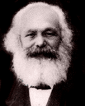

Marx-Engels Internet Archive

One of the most remarkable men of the day, who has played an inscrutable but puissant part in the revolutionary politics of the past forty years, is Karl Marx. A man without desire for show or fame, caring nothing for the fanfaronade of life or the pretence of power, without haste and without rest, a man of strong, broad, elevated mind, full of far-reaching projects, logical methods, and practical aims, he has stood and yet stands behind more of the earthquakes which have convulsed nations and destroyed thrones, and do now menace and appal crowned heads and established frauds, than any other man in Europe, not excepting Joseph Mazzini himself. The student of Berlin, the critic of Hegelianism, the editor of papers, and the old-time correspondent of the New York Tribune, he showed his qualities and his spirit; the founder and master spirit of the once dreaded International and the author of "Capital", he has been expelled from half the countries of Europe, proscribed in nearly all of them, and for thirty years past has found refuge in London. He was at Ramsgate the great seashore resort of the Londoners, while I was in London, and there I found him in his cottage, with his family of two generations. The saintly-faced, sweet-voiced, graceful woman of suavity who welcomed me at the door was evidently the mistress of the house and the wife of Karl Marx. And is this massive-headed, generous-featured, courtly, kindly man of 60, with the bushy masses of long revelling gray hair, Karl Marx? His dialogue reminded me of that of Socrates -- so free, so sweeping, so creative, so incisive, so genuine -- with its sardonic touches, its gleams of humor, and its sportive merriment. He spoke of the political forces and popular movements of the various countries of Europe -- the vast current of the spirit of Russia, the motions of the German mind, the action of France, the immobility of England. He spoke hopefully of Russia, philosophically of Germany, cheerfully of France, and sombrely of England -- referring contemptuously to the "atomistic reforms" over which the Liberals of the British Parliament spend their time. Surveying the European world, country after country, indicating the features and the developments and the personages on the surface and under the surface, he showed that things were working toward ends which will assuredly be realized. I was often surprised as he spoke. It was evident that this man, of whom so little is seen or heard, is deep in the times, and that, from the Neva to the Seine, from the Urals to the Pyrenees, his hand is at work preparing the way for the new advent. Nor is his work wasted now any more than it has been in the past, during which so many desirable changes have been brought about, so many heroic struggles have been seen, and the French republic has been set up on the heights. As he spoke, the question I had put, "Why are you doing nothing now?" was seen to be a question of the unlearned, and one to which he could not make direct answer. Inquiring why his great work "Capital", the seed field of so many crops, had not been put into English as it has been put into Russian and French from the original German, he seemed unable to tell, but said that a proposition for an English translation had come to him from New York. He said that that book was but a fragment, a single part of a work in three parts, two of the parts being yet unpublished, the full trilogy being "Land", "Capital", "Credit" , the last part, he said, being largely illustrated from the United States, where credit has had such an amazing development. Mr. Marx is an observer of American action, and his remarks upon some of the formative and substantive forces of American life were full of suggestiveness. By the way, in referring to his "Capital", he said that any one who might desire to read it would find the French translation much superior in many ways to the German original. Mr. Marx referred to Henri Rochefort the Frenchman, and in his talk of some of his dead disciples, the stormy Bakunin, the brilliant Lassalle, and others, I could see how his genius had taken hold of men who, under other circumstances, might have directed the course of history.
The afternoon is waning toward the twilight of an English summer evening as Mr. Marx discourses, and he proposes a walk through the seaside town and along the shore to the beach, upon which we see many thousand people, largely children, disporting themselves. Here we find on the sands his family party -- the wife, who had already welcomed me, his two daughters with their children, and his two sons-in-law, one of whom is a Professor in King's College, London, and the other, I believe, a man of letters. It was a delightful party -- about ten in all -- the father of the two young wives, who were happy with their children, and the grandmother of the children, rich in the joysomeness and serenity of her wifely nature. Not less finely than Victor Hugo himself does Karl Marx understand the art of being a grandfather; but, more fortunate than Hugo, the married children of Marx live to cheer his years. Toward nightfall he and his sons-in-law part from their families to pass an hour with their American guest. And the talk was of the world, and of man, and of time, and of ideas, as our glasses tinkled over the sea. The railway train waits for no man, and night is at hand. Over the thought of the babblement and rack of the age and the ages, over the talk of the day and the scenes of the evening, arose in my mind one question touching upon the final law of being, for which I would seek answer from this sage. Going down to the depth of language, and rising to the height of emphasis, during an interspace of silence, I interrogated the revolutionist and philosopher in these fateful words, "What is?" And it seemed as though his mind were inverted for a moment while he looked upon the roaring sea in front and the restless multitude upon the beach. "What is?" I had inquired, to which, in deep and solemn tone, he replied: "Struggle!"
At first it seemed as though I had heard the echo of despair; but, peradventure, it was the law of life.
The Sun, No. 6, September 6, 1880
The interview with the editor of the progressive
New York newspaper The Sun took place August 1880
Transcribed in 1996 by Zodiac
Html Markup in 1999 by Brian Baggins